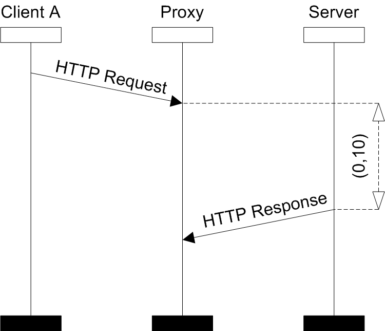
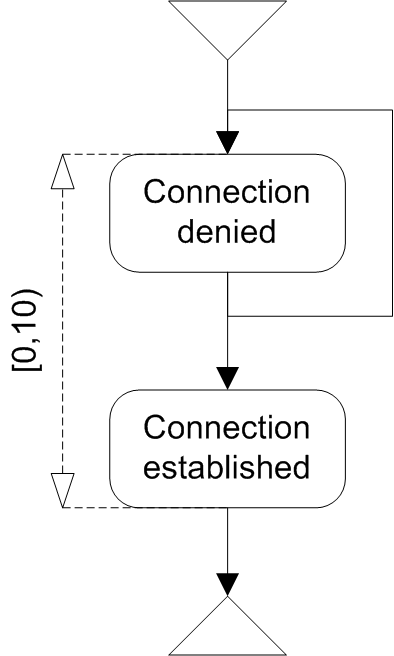
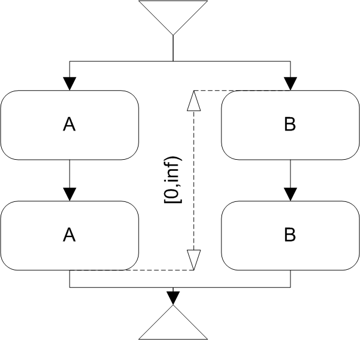

Correct Time Constraint Syntax
The correct time constraint syntax algorithm is used for checking whether introduced time constraints are correct to use in SCStudio. The main motivation for such test is to rule out time constraints which are either not allowed by the standard or ambiguous.
The following conditions must hold for every time constraint to suffice correct time constraint syntax algorithm:
- if the constraint is in BMSC it has to restrict events which are visually ordered
- if the constraint is in HMSC and it restricts nodes A and B, every path going through A (resp. B) must go through B (resp. A) and it cannot go twice through A (resp. B) without going through node B (resp. A) in between.
An example of a time constraint can be seen on the next picture. Receive events of HTTP Response and send event HTTP Request messages are not visually ordered. Thus the time constraint does not satisfy the correct time constraint syntax property.
-
- 
- Example of a wrong time constraint
On the next picture we see that there exists path which goes twice in a row through the node Connection denied and thus the introduced time constraint also does not satisfy the correct time constraint syntax property.
-
- 
- Violation of constraint syntax
The last example depicts a HMSC where exists path which goes through the node A of but does not go through the node B. Since there is introduced time constraint restricting these nodes, it violates the correct time constraint syntax property.
-
- 
- Example of a wrong time constraint